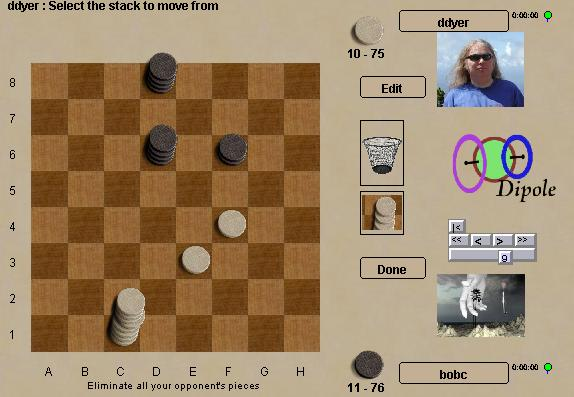

Lines of Action |
|
Truchet |
| Register |
Log
in and
Play |
Guest
Login |
Dipole
Dipole is an intensely tactical stacking game by Mark
Steere. Like all of his games, Dipole is finite and without
draws. Stacks move only forward unless capturing, so powerful
moves are likely to be phyrric victories. |
 |
| Dipole
rankings at Boardspace |
Dipole at BoardGameGeek |
| Dipole game archives at Boardspace | Dipole official
rules |
| Dipole win/loss
database |
|
|
Site Map |
Go to BoardSpace.net home page |